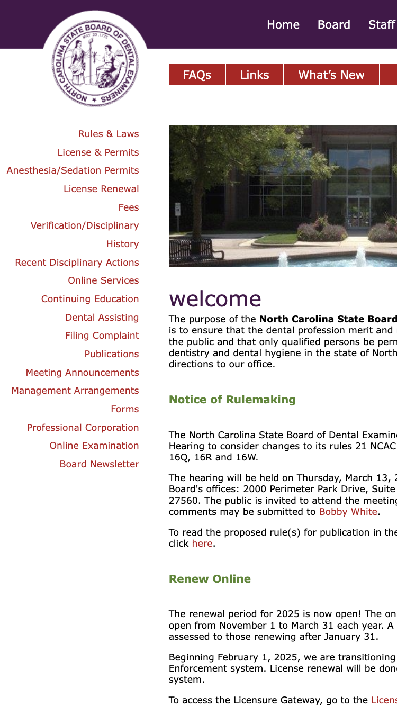
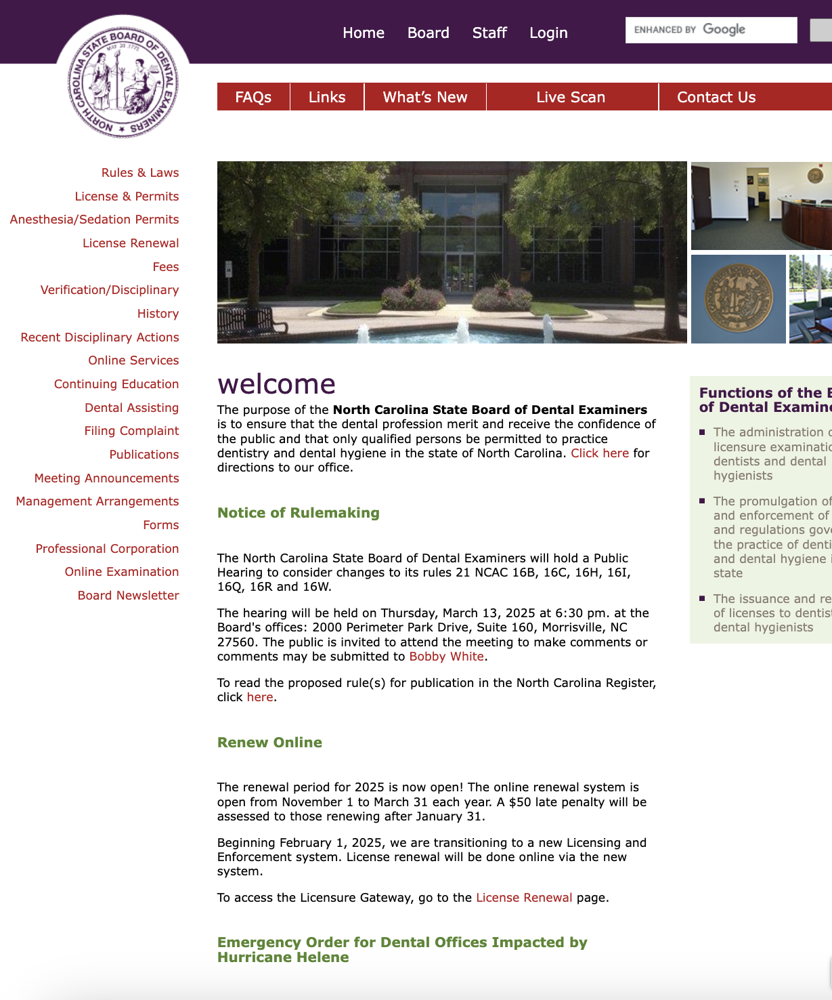
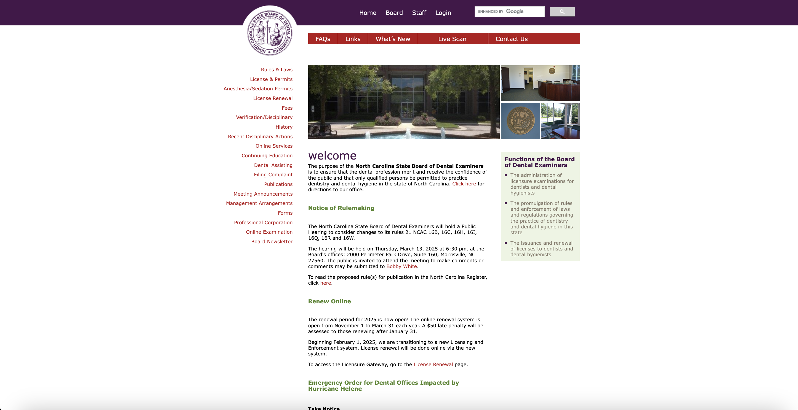
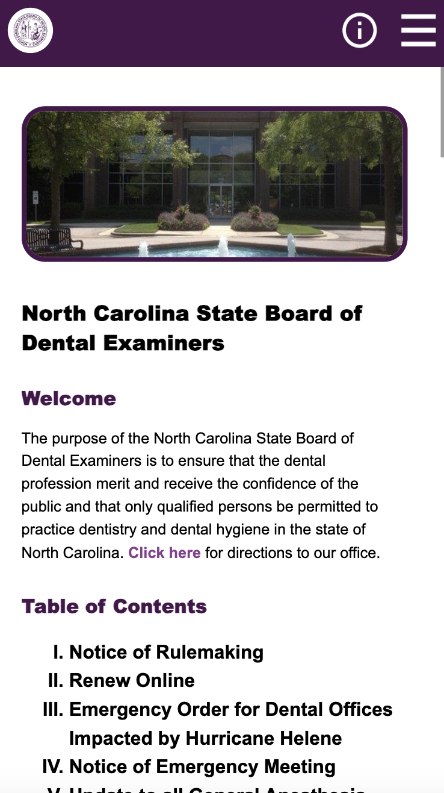
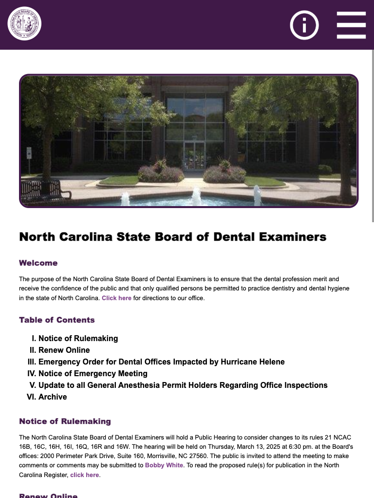
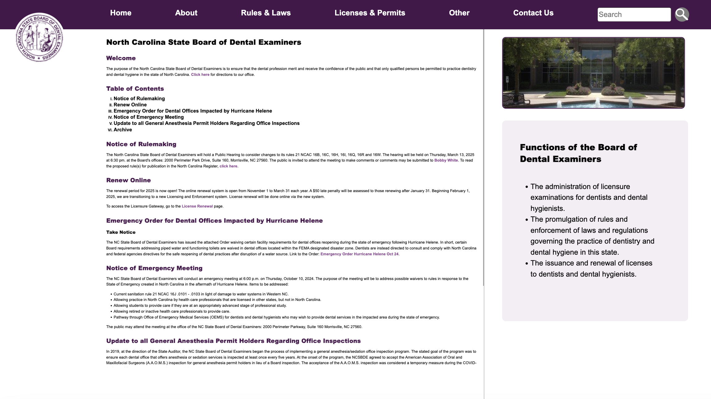

Responsive Redesign Case Study
This case study describes my examination and redesign of NC Dental
Board's website for improved responsiveness.
ROLE
UI/UX Designer and Front-End Developer
TIMELINE
March - April 2024
Introduction
'Responsive' websites use HTML and CSS to automatically resize or
rearrange their content as the screen's dimensions change. Many
high-profile websites prioritize responsiveness, however, many
others with less resources for development and maintenance do not
react to screen dimensions. I will take one such website, the homepage
for the
North Carolina State Board of Dental Examiners (NCSBDE), and redesign its homepage for responsiveness.
Problem
I chose the NCSBDE website because it provides important information
that pertains to many North Carolina citizens, however, the site's
usability is impeded by its lack of responsive design. By
identifying flaws with its design and iteratively building a more
responsive version, I will practice holding responsiveness at the
center of the design process.
The screenshots below display the current
NCSBDE website
at various screen widths (375x667px, 768x1024px, and 3840x2160px).
These screen widths represent the view on mobile, tablet, and computer
respectively. As shown, the website does not consistently resize or
rearrange its content depending on screen size, and instead, content
often gets cut off on mobile. And, on the computer, the screen has an
awkward amount of padding on the left and right.



Mobile (375x667px)
Tablet (768x1024px)
Computer (3840x2160px)
Usability & Accessibility Analysis
After exploring the NCSBDE homepage, I compiled this table of the
usability
(learnability, memorability, and efficiency) and accessibility issues
I identified with the website. To detect accessibility issues, I used
the tool
WebAIM WAVE, which automatically detects possible accessibility problems.
Learnability
-
Since learnability refers to the ability of new users to
accomplish tasks, one learnability problem is the presence of
many external deadlinks on the page. For example, the pages
tries to link to the NC Secretary of State website,
www.secstate.state.nc.us, but this is a deadlink, which is confusing for new and old
users.
-
The NCSBDE homepage also links to other pages within the NCSBDE
site in confusing and disjointed ways, since there is a header
in purple of pages to navigate to, another row in red of pages
below that, as well as a column along the left side of other
pages. This disjoint makes it diffult for new users to find the
page they need.
Memorability
-
The sheer number of navigable pages from the homepage makes it
difficult to remember where a page you have been to before is.
Also, several of these links are very similar and could be
consolidated for efficiency, like 'Anesthesia/Sedation Permits'
and 'License & Permits'.
-
Another memorability problem with the NCSBDE website is the lack
of coordination of colors. The top header nav bar is purple,
while the nav bar below that is red, and the nav bar column
along the left has no background color. Colors can be a valuable
memory trigger, so a lack of standardization further impedes
returning users' abilities to navigate the page.
Efficiency
-
If the user clicks 'Verification/Disciplinary History' on the
left column, several other links in the left column disappear,
including `Anesthesia/ Sedation Permits'. This inconsistency in
the left column nav bar happens on several pages. This impedes
efficiency because users have to return to the homepage in
between.
-
The height of this homepage also impedes efficiency because this
homepage has 25 long subsections. There is no table of contents
nor hyperlinks to these subsubsections, so even experienced
users who know where they need to go still have to spend a lot
of time scrolling to get there.
Accessibility
WebAIM Wave discovered many accessibility issues:
-
'No heading structure': The page has no headings, instead, all
the text is within a div, span, or p, and manually styled. This
makes it more difficult for screen readers to report the
structure of this page to users.
-
'Null or empty alternative text': None of the images on this
page have alternative text. This means that Screen Readers
cannot report their contents to visually impaired users.
-
'Very low contrast between text and background colors': The
section 'Functions of the Board' has green text and green
background with very close shades, increasing difficulties for
visually-impaired users.
As described, the NCSBDE website suffers from a variety of
learnability, memorability, efficiency, and
accessibility issues. The common themes are the confusing
nature of the 3 separate nav components, the lack of color
coordination, the long height of the page and lack of structure, and
the lack of responsiveness to narrow screens. Addressing each problem
would improve the user experience and ease of use, not just for those
with accessibility issues or new users, but for all users.
Visual Design Style Guide
After identifying these usability and accessibility issues, I
redesigned the homepage of the NCSBDE website with these concerns in
mind. Before recreating the website with HTML and CSS, I created a
visual design style guide and mockups with the design tool
Figma.
This
style guide
contains the main colors, typography, and reusable components for my
mockups and redesigned webpage. Creating a consistent palette and
matching components improved the coordination and
cohesion
of my final redesign, and ideally improves the user experience.
Mockups
The
following mockups
display my redesign of the NCSBDE home page on mobile, tablet, and
desktop screens. This redesign prioritizes responsiveness by
reusing styling, layout, and components between screen sizes, while
still adjusting to new proportions.
My redesigns attempt to address the usability and accessibility issues
I identified earlier in the following ways.
Learnability
-
My redesign addresses learnability by consolidating the links to
other NCSBDE pages. On computer, these internal links are all
within the header and the dropdowns from the header. On mobile
and tablet, these internal links are within the hamburger popup.
-
Consolidating these links from 3 locations into only 1 component
makes the homepage more learnable because it centralizes
navigation and simplifies the experience for first-time users.
Memorability
-
I addressed memorability by coordinating the color palette and
reducing the number of internal links in the header/hamburger
popup. First, I made the header, as well as all subsections of
the homepage, the color 'grape' to unify the navigational
components of the page.
-
By reducing the color palette to only a few coordinated accent
colors, the page is more cohesive and its elements are more
memorable to returning users. Also, reducing the number of
internal links makes it faster for returning users to find which
page they need to revisit.
Efficiency
-
My redesign addresses efficiency by reducing the length of the
homepage. Instead of including all 25 subsections, I kept only
the five most recently-added subsections, and then added an
'Archive' section which would link to old subsections.
-
I also created a table of contents to scroll to each subsection,
which improves efficiency by allowing experienced users to
navigate to the section they need more quickly (instead of
scrolling manually).
Accessibility
-
I addressed accessibility primarily by making the homepage
responsive, which allows users to access all functionalities of
the homepage regardless of screen size.
-
I also added alt text to all images, using headers to create
structure, and carefully chose font colors and background colors
to prioritize contrast and readability. Each of these choices
removes barriers from people with physical and visual
impairments to interact with the homepage.
Final Redesign
The final deployment of my redesigned NCSBDE website can be found
here. The screenshots below display the redesigned website on mobile,
tablet, and computer screens.



Mobile (375x667px)
Tablet (768x1024px)
Computer (3840x2160px)
Reflections
This redesign was a valuable exercise in critiquing the
usability, accessibility, and responsiveness of an
existing website, and then putting my observations into practice. I
also found it valuable to understand the tradeoffs necessary when
building a website, and how to justify these choices through several
iterations.
I found it suprising how many important websites like the NCSBDE
homepage lack responsive features, impeding the user experience and
making actions more difficult. However, it is easy to see a website
and grumble about how unresponsive and awkward its interface is. In
reality, I learned that building a responsive website is not at all
simple, and takes careful thought, planning, and iteration.